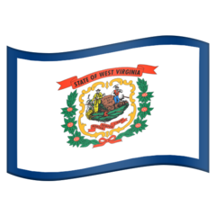
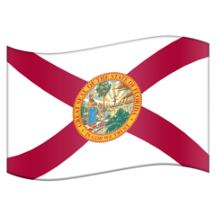

🍳 Salients
🇫🇷
Charleville-Mézières
🇮🇱
Galilee Panhandle
🇨🇭
Geneva
🇮🇱
Jerusalem
🇳🇱
Limburg
🇧🇦
Neum
Connecticut Panhandle

Eastern West Virginia

Florida Panhandle
Idaho Panhandle
Southwick Jog
Texas Panhandle
🇹🇷
Aralık
🇰🇬
Batken
🇸🇩
Blue Nile
🇨🇲
Cameroon Far North
🇳🇦
Caprivi Strip
🇸🇳
Casamance
🇧🇩
Chittagong
🇹🇬
Cinkassé
🇨🇩
Congo Pedicle
🇱🇹
Dieveniškės
🇨🇴
Guainía
🇰🇵
Hamgyŏng
🇹🇷
Hatay
🇹🇿
Kagera Region
🇿🇦
Kalahari Gemsbok
🇨🇩
Kongo Central
🇨🇴
Leticia Trapeze
🇯🇴
Mafraq
🇰🇿
Mangystau
🇦🇷
Misiones
🇰🇭
Parrot’s Beak
🇱🇦
Phongsaly
🇷🇺
Primorsky Krai
🇮🇳
Seven Sisters
🇪🇷
Southern Red Sea
🇹🇭
Southern Thailand
🇹🇯
Sughd
🇲🇲
Tanintharyi
🇺🇿
Tashkent
🇨🇦
Tatshenshini-Alsek Park
🇱🇧
Tfail
🇵🇪
Tumbes
🇵🇱
Turoszów Panhandle
🇦🇫
Wakhan Corridor
🇨🇳
Yadong
Alaska Panhandle
Maryland Panhandle
Oklahoma Panhandle
Northern West Virginia